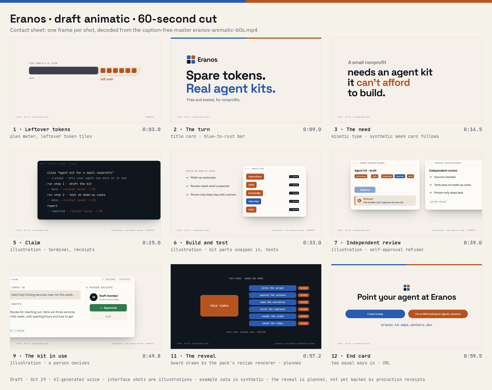

Draft animatic: the 60-second cut
A first animated draft of the Eranos video, made with the video and motion seed pack’s render and check verbs. It follows the storyboard: spare AI capacity, a nonprofit’s need, a volunteer’s agent building a kit, an independent review, and the kit in use.
What is real, and what is not yet
- This is a draft. Every frame says so.
- The voice is AI-generated, made by an open text-to-speech model on a local computer. Taylor will record the final voiceover.
- The interface shots are illustrations, not screen captures. The final cut will film a real kit task on the live site.
- All example data is synthetic.
- The closing line, that the whole video was made from nouns and verbs, is labeled planned. It counts only when the production run leaves a receipt for every step.
- The music is a quiet piano bed made for this draft.
Quality checks
The video pack’s check verb measured both files. The caption-free master fails the caption check by design, because its captions are a separate file.
| Check | Master | Burned-in captions |
|---|---|---|
| container_and_streams | pass | pass |
| duration_and_frames | pass | pass |
| frame_hash_spot_checks | pass | pass |
| black_frames | pass | pass |
| frozen_frames | pass | pass |
| integrated_loudness | pass | pass |
| caption_timing_coverage | fail | pass |
| synthetic_disclosure | pass | pass |
Files
- Master video, captions as a separate file (MP4, 1920×1080, 60 seconds)
- Video with captions burned in (MP4)
- Captions, WebVTT and SRT
- Contact sheet: one frame per shot
- The storyboard it follows

Before the final cut
- Film a real kit task on the live Eranos site, so the interface shots are real.
- Run the production as verbs on Tessera, so the closing line is backed by receipts.
- Match the site’s colors: nouns in blue, verbs in rust.
- Record Taylor’s voiceover, and make the three-minute cut.
